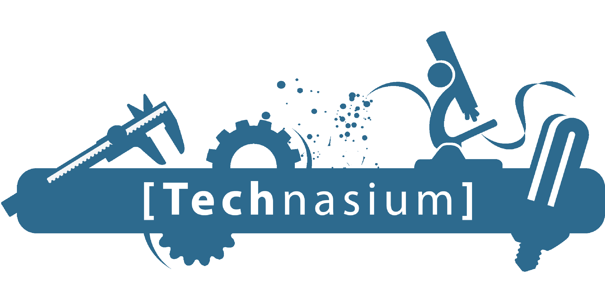
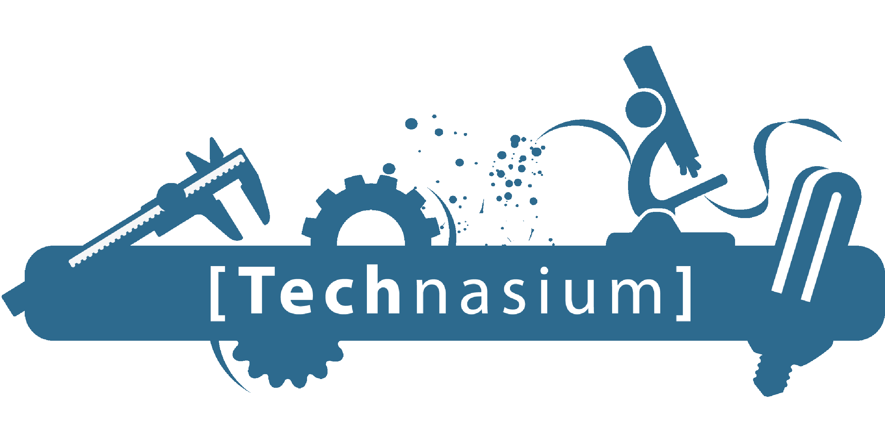

Studie choice
I took a gap year to look at what i was interested in as a job at not just as a hobby. I also took
multiple test and did online research. (Corona limited my options)
I am a very curious person and like to now how things work up into detail. I think this kind of
study and work will give me the opportunity to discover and adjust these things. Since the demand
for ICT workers are high and workplaces give lots of opportunities to keep learning new things i can
keep my intrests wide and keep developing.
I want to find a job and maybe go abroad to do so. I hope during my internship to get an image of
the jobs and maybe even get a job over. I am most interested in software engineering. Sinds it means
i will be creating lots of things and i like to create. I expect to at least learn the basics of
computers, engineering, coding and how a lot of existing programs work.
Personal SWOT analysis
My Strenghts:
I am great in working alone, concentrating, technical aspects and finding solutions.
My Weaknesses:
I am bad at keeping myself motivated and concentrated when it comes to subject that i am not
interested in. Working together is not something i like doing.
Opportunities:
I am bad at keeping myself motivated and concentrated when it comes to subject that i am not
interested in. Working together is not something i like doing.
Threats:
I am not good at planning things and i tend to push work forward when i feel like i won’t do a good
job. I am quite a forgetful person.
Programming experience
I did a course at the HZ itself with O&O(research and design) with my previous school, Nehalennia, where we had to make our own little game with programming/coding. It lasted about a week and worked with others ICT students. At the end of the week we also made an application for traveling students. It was quite a while ago but i think it was English, i can’t remember the application we used but it was quite a simple one with easy basic coding.
ICT field of work (company safari)
Oracle is an American multinational computer technology corporation headquartered in Austin, Texas.
Oracle sells database software and technology, cloud engineered systems and enterprise software
products .particularly its own brands of database management systems. In 2020, Oracle was the
second-largest software company in the world by revenue and market capitalization. The company also
develops and builds tools for database development and systems of middle-tier software.
Providing organizations with the transformational tools they need to embrace innovation, Oracle
today announced continued advancements in emerging technologies across Oracle Cloud, including
artificial intelligence (AI), machine learning, blockchain, IoT, and human interfaces.
Oracle believes in the importance of Diversity and Inclusion, where everyone’s differences are
celebrated, and innovation can be found from the diverse backgrounds, views and abilities. They
have committed themselves to creating a workplace that enables people to do their best work and are
inspired to let their voice and values be heard.
 
